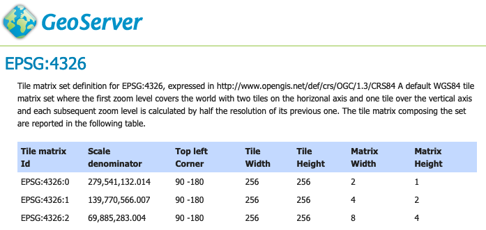

OGC API Tiles¶
A OGC Tiles API based on the current early specification draft, delivering both tiled data (vector tiles) and tiled maps (classic map tiles).
Version |
Implementation status |
|
|---|---|---|
Part 1: Core |
Implementation based on early specification draft. |
OGC API Features Extension¶
This operates as an extension to OGC API Features listing GridSets as an additional resource.

Tile matrix EPSG:4326 definition¶
Previous: OGC API Features
Next: OGC API - Maps